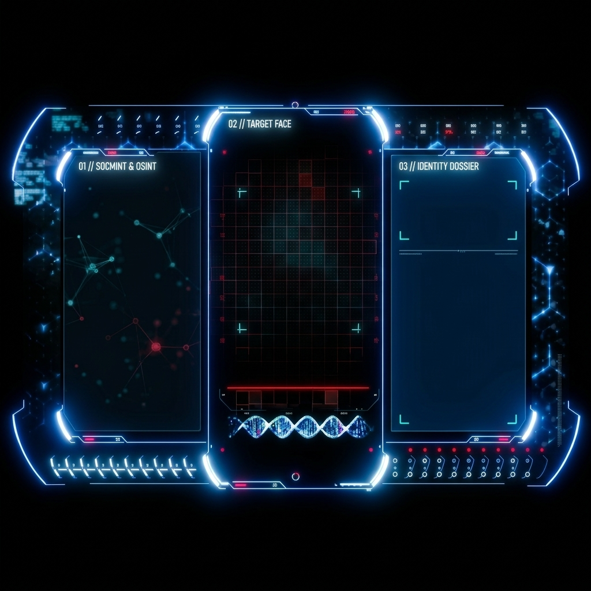
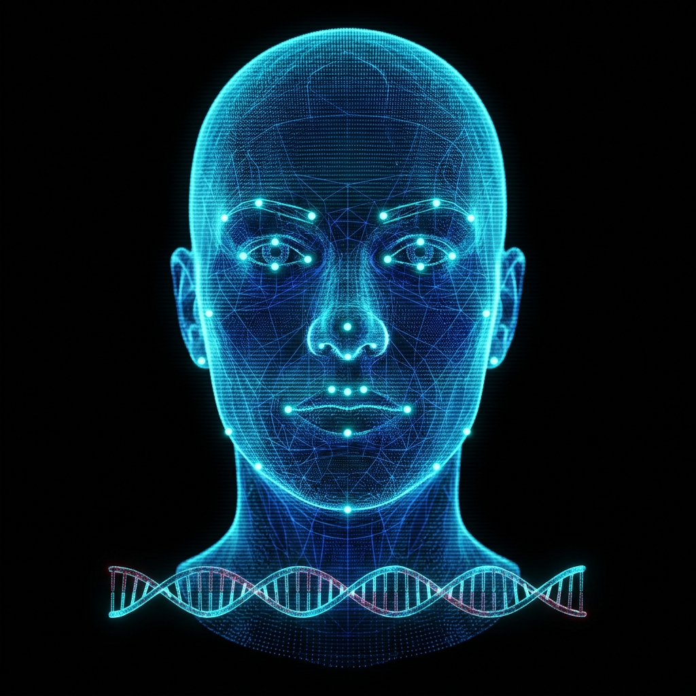

M.A.Y.A. // MON ASSISTANTE Y ARRIVE
VOIX : MAYA FR ✓
23:52
00 · VUE 3D
01 · OSINT PHOTO
02 · SOCMINT
03 · VISAGE


01 · VISAGE EXTRAIT
FACE REC 68-PTS
IPD: 63.4mm
EMB: 8F3A·9C12
IG @maya.osint ✓
LI Profil Certifié ✓
FACE MATCH 99.4%
02 · PHOTOS CROISÉES
CIBLE IDENTIFIÉE
Reconnaissance 12MP
📸 INSTAGRAM
99.4% ✓
💼 LINKEDIN
98.7% ✓
🌐 WEB / PRESSE
98.1% ✓
PHOTO 12MP → EXTRACTION VISAGE → OSINT
99.4% ✓
SOURCES PHOTOS : INSTAGRAM (99.4%) · LINKEDIN (98.7%) · X/WEB (98.1%)
Pincez « PHOTO OSINT » pour capturer une photo, extraire le visage (Face Rec 68 pts) et croiser les photos des réseaux pour identifier la cible.
📸
PHOTO OSINT
🌐
SOCMINT
🎯
CAMÉRA LIVE
🎙️
VOCAL / NOM
⏭
SUIVANT